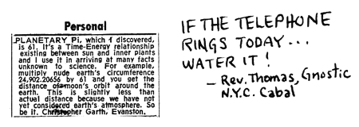

THE FOLLOWING IS QUOTED FROM BERGAN EVANS
ON NORBERT WEINER, NUCLEAR PHYSICIST
The second concept Wiener has to establish is that of entropy. Probability is a mathematical concept, coming from statistics. Entropy comes from physics. It is the assertion-- established logically and experimentally-- that the universe, by its nature, is "running down", moving toward a state of inert uniformity devoid of form, matter, hierarchy or differentiation.
That is, in any given situation, less organization, more chaos, is overwhelmingly more probable than tighter organization or more order.
The tendency for entropy to increase in isolated systems is expressed in the second law of thermodynamics-- perhaps the most pessimistic and amoral formulation in all human thought.
It applies however, to a closed system, to something that is an isolated whole, not just a part. Within such systems there may be parts, which draw their energy from the whole, that are moving at least temporarily, in the opposite direction; in them order is increasing and chaos is diminishing.
The whirlpools that swirl in a direction opposed to the main current are called "enclaves". And one of them is life, especially human life, which in a universe moving inexorably towards chaos moves towards increased order.
